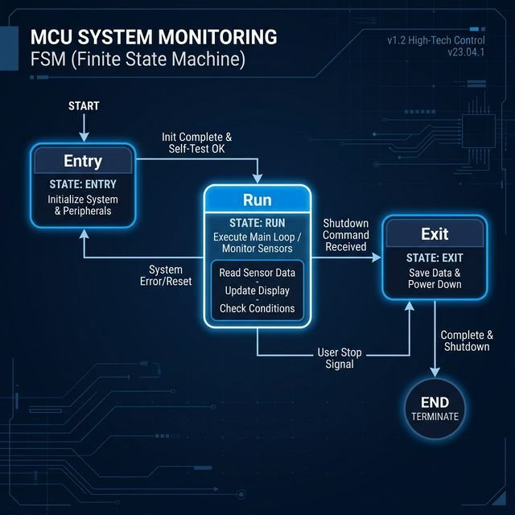

DX INNOVATION
?앹꽦??AI瑜??쒖슜??湲곗닠 理쒖쟻??諛?蹂??ы듃?대━???ъ씠?몄쓽 湲곗닠???꾩꽦??湲곗??낅땲??
GENERATIVE AI ??웾
ChatGPT Canvas? Gemini瑜??곴레 ?쒖슜?섏뿬,
蹂듭옟??湲곗닠 留ㅻ돱?쇱쓣 理쒖쟻?뷀븯怨?肄붾뱶 ?붾쾭源?諛??먮윭 ?몃옒?뱀쓽 ?뺥솗?꾨? 洹밸??뷀빀?덈떎.
?대윭??DX(Digital Transformation) ??웾? ?⑥닚???꾧뎄 ?ъ슜???섏뼱,
?λ퉬???좎? 蹂댁닔 ?꾨줈?몄뒪瑜??곸떊?섍퀬 理쒖긽???좊ː?깆쓣 ?뺣낫?섎뒗 ?덈줈???⑤윭?ㅼ엫???쒖븞?⑸땲??
湲곗닠???먯튃 (TECHNICAL PRINCIPLES)
諛섏쓳?????붿옄??/h4>
PC? 紐⑤컮???붾컮?댁뒪 ?섍꼍?먯꽌 ?꾨꼍???덉씠?꾩썐???쒓났?섎룄濡?誘몃뵒??荑쇰━(Media Query)瑜??곸슜?섏뿬 ?곗뼱???ъ슜??寃쏀뿕(UX)??援ъ텞?덉뒿?덈떎. 媛?깅퉬 100% 理쒖쟻??/span>.
?대┛ 肄붾뱶 ?꾪궎?띿쿂
留ㅼ쭅 ?섎쾭瑜?諛곗젣?섍퀬 紐낇솗??蹂?섎챸怨??쇨???二쇱꽍???묒꽦?섏뿬, ?κ린?곸씤 ?좎?蹂댁닔??諛??뺤옣?깆쓣 洹밸??뷀븳 援ъ“瑜??ㅺ퀎?덉뒿?덈떎. 臾닿껐??0% 吏??
FSM ?쒓컖???곸슜

?붿??덉뼱留??뺤껜?깆쓣 ?대━湲??꾪빐 ?곗륫 ?섎떒??'?좏븳 ?곹깭 癒몄떊(FSM) ?곹깭 ?쒖떆湲?瑜?援ы쁽?섏뿬, ?쒖뼱 ?쇰━媛 ?쒓컖?곸쑝濡??쒗쁽?섎룄濡??붿옄?명뻽?듬땲??